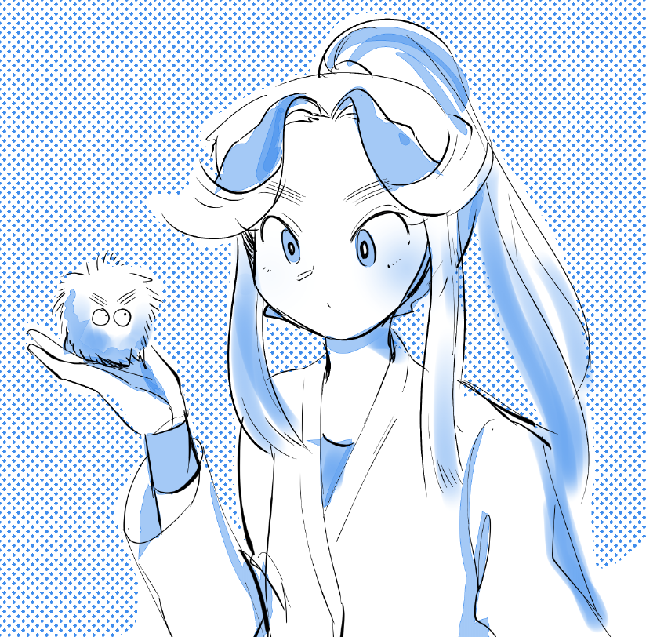
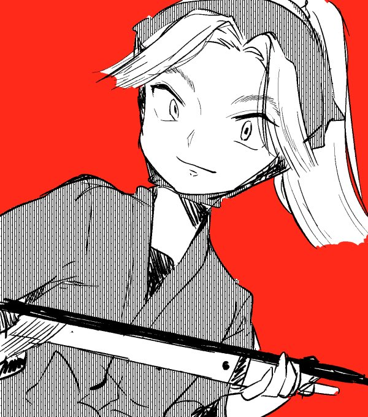
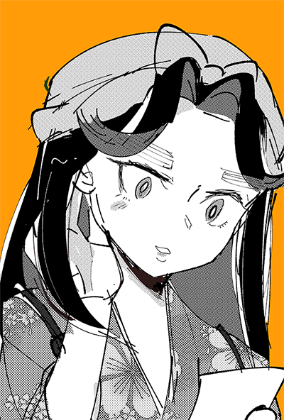
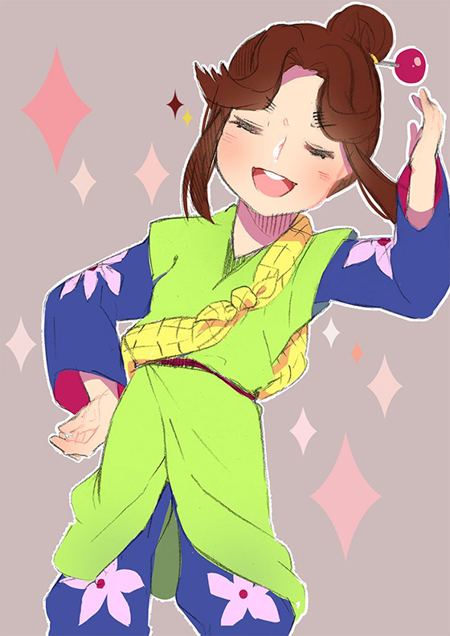
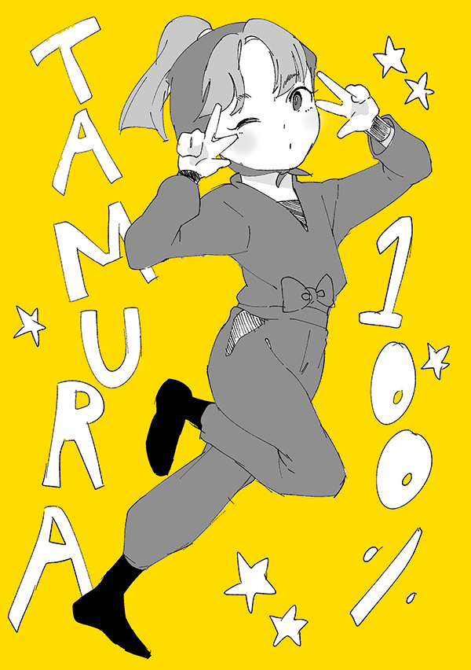
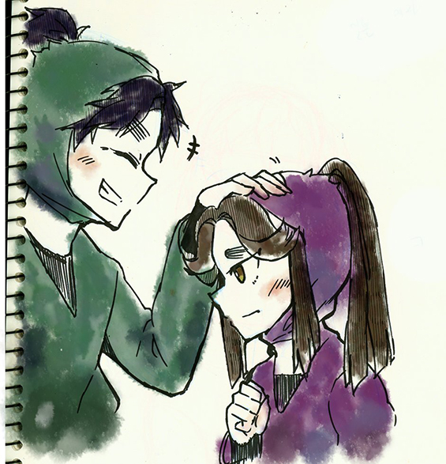

무로마치 4학년 로그
(210506 추가)
↑new
↓old

한동안 눈달린 폼폼이 유행했을때 코헤 닮았다고 생각해서 낙서

애니버전/낙란버전 타키 근데 둘다 내 그림체를 곁들인<되서 별 의미 없어짐

낙란버전 미키티
사실 미키티는 토끼겅듀님같은 맛으로 좋아해서 전 애니파입니다

이번 닌카페 선배들은여장인데 타키미키는 아니라 아쉬워서 낙서
저러고 주문 받다가 이케돈 선배에게 테이크아웃 당했음 좋겠읍니다

타키 구사복 좋아해요. 귀티나고 예뻐 ㅠㅠㅠ
주 먹만한 비녀 끼는것도 귀여워요

첨그려본 미키티

첨그려본 타키